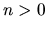

The external interface tests are mandatory.
For at least one class MyClass in a given hierarchy there should be
an executable test-MyClass.
It should send output to cout, which is read by a report script.
The only required output is a line
n tests failed.
when  tests fail.
In general, for every public method in the hierarchy,
test-MyClass should output a line of the form
[+-] <function prototype>
where + or - indicates whether the tests for this
method were successful. Additional tests which do not focus on a
particular method may be appropriate; see, e.g.,
magnus/back_end/general/test/test-List.C.
Note that for container classes such as ListOf and
SetOf, it is straightforward to test each method in isolation,
but in the case of non-trivial group theoretic code this may not be
feasible. Here are some alternative techniques we have employed:
- For Knuth-Bendix, we have a fixed suite of test inputs along with the
expected output; the latter can be mechanically compared to the actual
output.
- For the one relator word problem, we have a program which generates
relators and trivial words at random. Since the expected output is
known regardless of the input, the actual output is easy to test
mechanically for correctness. The parameters of the random generation
are fixed at compile time, so we can repeat the test.
Other conventions:
- The tests must be defined exclusively in terms of the
public interfaces of the classes in the hierarchy.
- If the test requires input data from a file, this data must
be in a file
test-MyClass.data
- If the test requires another program to generate data, the
external program must of course also be provided, and called from
test-MyClass with a system call. If some data is
generated randomly, the random generator must be seeded the same way for
each invocation of test-MyClass.
- If the test produces output on cout which should be compared with
a file of correct output, the latter should be called
test-MyClass.mastertestout.
If the output needs to be evaluated by an external program, then
of course this program should also be provided, and called from
test-MyClass with a system call.